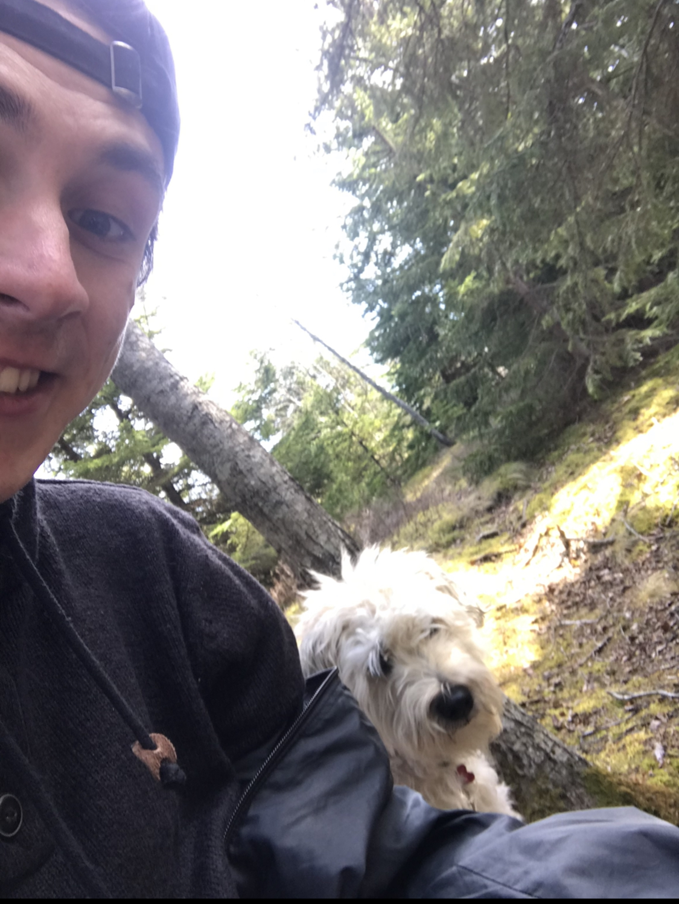
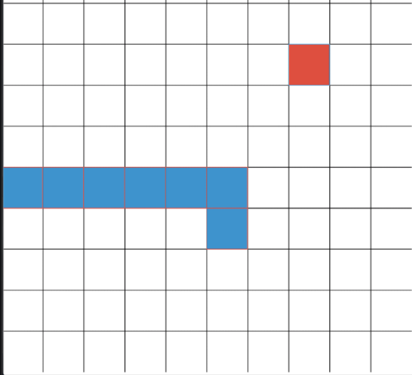

Coding Endeavours |
My Interest in Programming |
General Thought Process
Hello there! My name is Keegan Hutchinson, and I am a Web and Mobile
Application Development student at NBCC.
I am a recent graduate of Saint John High School in Saint John, NB.
Originally planning on taking Business Administration at UNB, I had an itch
to apply myself to something more creative.
Looking for something to keep me mentally occupied during the COVID-19 lockdown, i decided to pick up an
old hobby of mine as a means of self occupation- that hobby being computer programming.

Me and my dog, Duncan.
Coding Endeavours
My coding journey pioneered within my freshman year of high school. For fun, i decided to learn
Python, just to see what i could do. during this time frame, i used the skills i acquired to make little games,
such as:
- Recreating the game 'snake'
- Creating a basic 'conversation bot'
- building small concepts for websites
- a simple 'run and gun' game
Just to name a few things...

snake game that I recreated
Why I'm Interested in a Career in Software Development
As I previously mentioned, the COVID-19 lockdown gave me lots of time to do some
serious self reflection, and think about what i really wanted in life. with the abundance of freetime I had,
I decided to direct my energy into something more positive to keep me occupied. To name a few of these acquired 'new hobbies' I began to explore
teaching myself various skills such as:
- Building E-Commerce Websites:
- When I was younger, I had a decently successful youtube channel, in which I earned quite a lot of money
making simple youtube videos. Ultimately, this is what sparked my interest in using the interenet as a tool
that can be utilized to make a passive income. Over the lockdown period, I created two e-commerce shops, with varying
degrees of success, such as:
- A small budget electronics shop, that mainly focused on both inexpensive cellphone accessories,
and a small selection of cheap wireless headphones
- A website centered around home fitness during the pandemic, that primarily sold cheap fitness equiptment.
- A website where I sold refurbished electronics. I would buy them in bulk, and fix them up and sell them off for profit.
this endeavour proved to be my most successful one.
- Graphic Design
- Having some previous graphic design skills acquired from some small projects with some school clubs, I decided
to advertise my skills on fiverr, and utilize my skills to my advantage. This gig proved to be decently successful, and gave
me quite a bit of exxperience under my belt in that area.
- Writing
- Despite most of my previous endavours having a primary focus on financial gains and building a portfolio of some sorts, I decided to
take up writing, as purely a leisurely hobby I could use to relax and express myself creatively. So far, I have began writing two books- in which I hope to complete
ideally by the end of the year.
With learning these new skills came the realization that i wanted to do something creative with my life.
weighing what possible options I had for creative yet stable career choices, I decided to take a closer look at software development. meeting both
of the previous criteria, I concluded that learning more about what the profession had in store for me was a step in the right direction, for both developing myself, as well
as my skillset.
To put my thought process into a list, here is why my interest in software development as a possible career choice was piqued :
- Software development/I.T related careers are notorious for their high rates of job satisfaction. being satisfied with my future field of work is something that is of upmost importance to me.
- Software development jobs are in great abundance, and are predicted to see above average job growth within the future- making it a stable career choice.
- Salaries within the profession are exceptionally high. though I myself am moreso driven by potential personal satisfaction as opposed to salary exclusively, there is no denying that it presents itself as an amazing perk.
- The general field is also known to be extremely creative in many ways, which is important to someone seeking a stable yet creative career, such as myself.
- The skills associated with being an effective I.T professional (i.e- computer programming) can be easily integrated into many aspects of ones career, and these said skills are exceptionally in demand.
- There is an abundance of oppurtunity to become a freelancer, work from home, and even start your own business if you do so desire. As somebody who wants to travel, this presents itself as an abolute plus.
With all of that being said, so far I believe that I am on the right path, and I am satisfied with my decision so far!
Thanks for the view :)